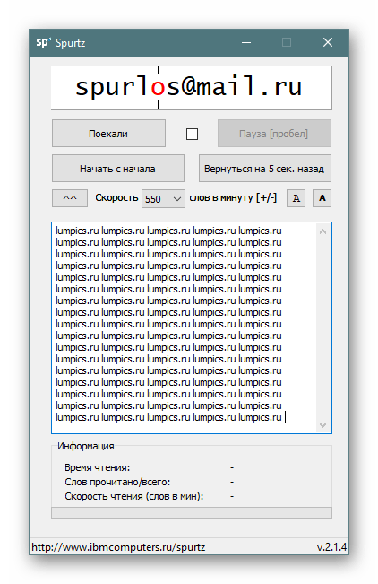
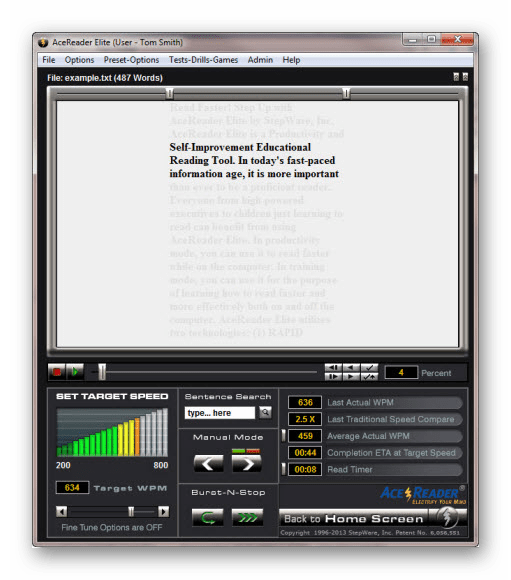
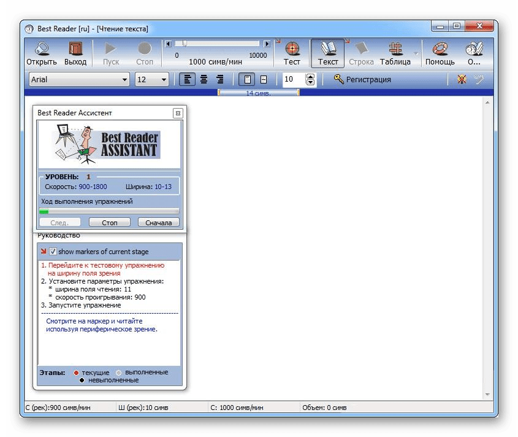
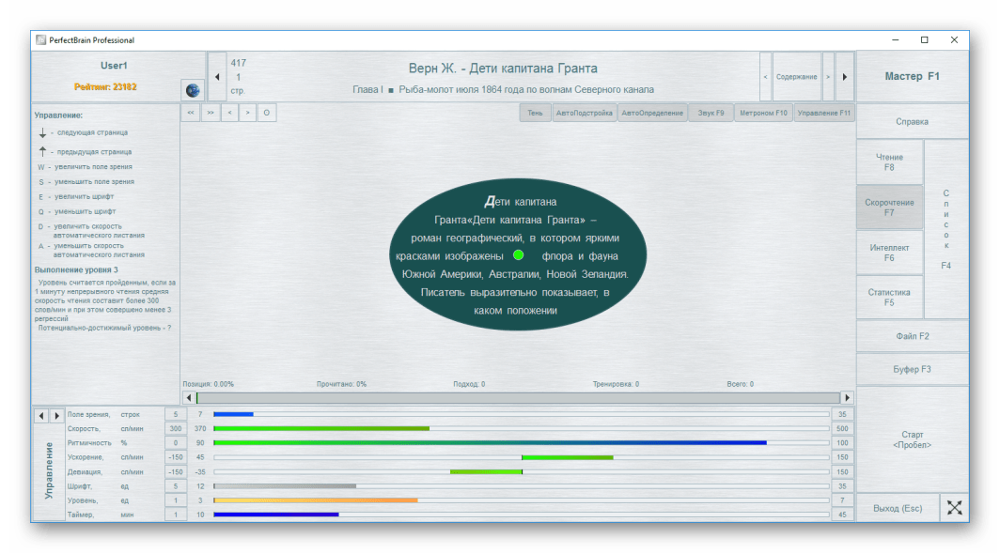
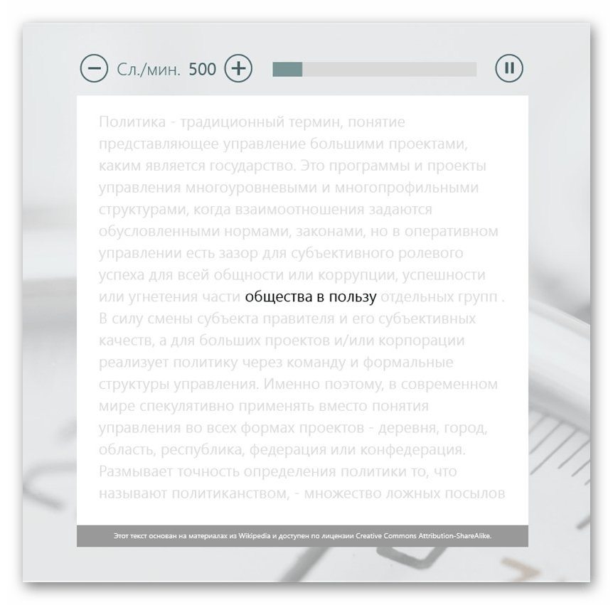

Программы для скорочтения
Ежедневно в интернете и за его пределами мы сталкиваемся с большим потоком информации, огромная часть которой — текстовая. Это и ленты в соцсетях, и статьи, и новости, и развлекательные сайты обо всех интересных событиях, и книги. С обычной скоростью чтения перечитать все, что мы можем найти, очень трудно, поэтому либо мы тратим на это много часов, либо отказываемся от данной затеи в пользу других занятий. Однако множество направлений письменного текста можно читать при помощи техники скорочтения. Это касается в первую очередь тех же новостей и каких-то рефератов, вспомогательных работ, где чаще всего важно просто уловить основную суть. Развить навык скорочтения может каждый, однако для этого ему понадобится упорство и ежедневные тренировки. Полезным инструментом в этом занятии станут специальные программы, о самых эффективных из которых мы и расскажем в данной статье.
Sprutz
Первой в списке стала известная программа (российский аналог оригинальной программы Spritz) среди всех тех,
кто
пытается постигнуть искусство скорочтения. Ее особенно заключается в том, что она не просто является
оболочкой
для текста, воспроизводимого на высокой скорости, а использует в основе своей работы технологию ORP —
Optimal
Recognition Point (оптимальная точка распознавания). Следовательно, чтобы понять принцип обучения быстрому
чтению именно таким методом, сперва рекомендуется узнать больше о данной технологии и ее отличии от основной
используемой технологии RSVP — Rapid Serial Visual Presentation (быстрое последовательное визуальное
предъявление), решив для себя, подходит ли она конкретно вам. Если кратко, то RSVP продолжает заставлять
глаза
двигаться, и именно на это уходит больше всего времени, а ORP предлагает сконцентрироваться на середине
слова,
а если точнее, на букве, которая выделена красным цветом внутри него. То есть ее суть заключается в
тренировке
распознавания мозгом слова при помощи этой красной буквы в центре него, являющейся оптимальной для
распознавания самого слова и осознавания его значения и контекста. Несмотря на кажущуюся сложность, весь
процесс происходит неосознанно для вас, главное при тренировке таким образом — расслабляться и не стараться
подходить к процессу со всей серьезностью.Обучившись одной скорости, вы сможете раз за разом повышать ее,
используя выпадающее меню с вариантами. Начинайте с небольших цифр и постепенно увеличивайте показатель,
например, на 50 слов в минуту. В программе уже установлен по умолчанию оптимальный шрифт для чтения: это не
менее важная характеристика и составляющая быстрого чтения, хотя на первый взгляд может показаться, что от
этого параметра мало что зависит. Данное ПО бесплатное и доступно для скачивания с официального сайта.
Несмотря
на то, что там зачем-то вверху страницы нарисовано мобильное приложение, программа скачивается для
компьютера в
виде EXE-файла с отдельным текстовым файлом книги в качестве примера. В самом ПО есть инструкция по тому,
как
загружать книги/материалы для чтения: разверните дополнительное ее окно, нажав на кнопку -- и ознакомившись
с
вводным текстом и/или запустив его для быстрого чтения.

AceReader
Самый популярный софт за рубежом, использующийся для обучения в учебных заведениях, но распространяющийся и
для
индивидуального использования. В его основу легли две технологии: RSVP, о которой мы уже упоминали выше, и
TSP
(тахистоскопическая презентация прокрутки).
В режиме RSVP основной текст выделен отображается в центральной области всего текста. Это позволяет глазам
меньше двигаться, следовательно, ускоряя процесс чтения.
TSP помогает лучше концентрироваться на чтении, но при этом глаза будут продолжать двигаться так же, как
обычно. Данный метод позволяет лишь повысить скорость чтения, то есть достигнуть промежуточного уровня между
стандартным чтением и скорочтением.
Исходя из ваших базовых возможностей по скорости чтения, процесс будет подстраиваться под условия, делая
подход
к изучению индивидуальным. Вы можете использовать любой текст для обучения, вставляя его из буфера обмена
или
загружая текстовый файл в HTML, PDF, DOC и др.
Упражняясь с AceReader на постоянной основе, вы сможете избавиться от двух вредных привычек, тормозящих
скорость чтения. А именно: произношение в уме прочитанных слов, возвращение назад для повторного прочтения.
Повышая скорость отображения текста, вы просто физически не сможете успевать совмещать чтение и
воспроизведение
слов в голове или попытку прочитать предыдущий текст, и будете вынуждены «читать вперед». Дополнительно при
помощи этого софта вы сможете ускорить время фиксации своего глаза (время, которое глаз затрачивает на
сосредоточенности на одной точке), расширить зону фиксации (область, попадающую в поле зрения при фиксации
на
одной точке), увеличить скорость повторной фиксации (возможность быстрого перемещения глаз). ПО платное,
выглядит довольно устаревшим, не имеет русского языка интерфейса, но для тех, кто готов с этим мириться,
предлагается попробовать демонстрационную версиею, позволяющую понять, стоит пользоваться рассматриваемым
софтом или нет.

Best Reader
Это программа, состоящая из комплекса упражнений, обещающих улучшить скорость чтения за
10-15 дней при условии
ежедневных занятий по 1-2 часа. Обучение разделено на 11 уроков, во время которых контролируются и скорость
чтения, и периферическое зрение. Пользователю понадобится выполнять задания, по результатам которых он
остается
на
прежнем уроке для повторного прохождения или переходит на новый уровень. Тестирование на усвоение урока
проходит в
форме теста с вопросами по тексту, который он прочитал. Для тренировки периферического зрения тут есть два
упражнения: «Тест на ширину поля зрения» и «Чтение таблиц Шульте». Всего в Best Reader 86 упражнений и
неограниченное количество двух упомянутых только что тестов.В режиме обычного чтения пользователь может
загрузить
собственные текстовые файлы в TXT и RTF, чтобы упражняться с ними. Тем не менее для закрепления автор ПО
рекомендует повторить пройденный курс. Если размер подобранного шрифта по умолчанию вас не устраивает,
можете
изменить его. Дополнительно позволяется установить его размер, скорость чтения, ширину колонки текста,
выравнивание текста в колонке и ширину поля зрения. ПО полностью русифицированное, условно-бесплатное и на
его
тестирование дается один день. После этого софт необходимо зарегистрировать. Приятным дополнением является
информативный сайт разработчика, где вы сможете отыскать полезные сведения по обучению скорочтению.

PerfectBrain
Многофункциональное программное обеспечение, которое в том числе развивает и
скорочтение. Так как это
комплексный тренажер, помимо данного навыка вы сможете улучшить еще и память, внимание, интеллект.
Останавливаться на этом мы не будем, углубившись в рассказ о возможностях улучшения скорости чтения. Для
этого
в программе есть овальное или прямоугольное (на выбор) рабочее поле, имитирующее естественный охват зрения
человека, где и будет располагаться текст. В результате таких действий улучшается кратковременная память и
расширяется поле зрения.Для тренировке в программе есть 5 методов, улучшающих навыки, но пользователю ничего
не
мешает придумать собственные вариации уроков и заниматься по ним. В дополнение к этому предлагается
воспользоваться тренировками, расширяющими поле зрения путем концентрирования внимания на центральной точке
и
боковым зрением охватывая все имеющиеся на поле элементы. Авторы утверждают, что этот способ эффективнее
методики Шульте, а так ли это на самом деле, каждый пользователь должен решать сам для себя. Остальные
возможности мы расписывать не будем, о них можно прочитать на официальном сайте программы. Сам софт имеет
бесплатный демонстрационный период, русифицированный удобный и современный интерфейс, которым приятно
пользоваться.

Скорочтение
Данное приложение подходит не всем пользователям, а лишь обладателям Windows 8 и 10,
так как
устанавливается оно через Microsoft Store, имеющийся только в этих версиях ОС. Сделано оно опять же в форме
упражнений, за выполнение каждого из которых (всего их 12) вы получаете балл. Для оценки эффективности
занятий в
программу встроено 18 тестов, позволяющих проверить уровень чтения и запоминаемость текста, который читаете.
В
отличие от множества подобных программ упражнения здесь довольно нестандартные, как и в PerfectBrain. Если
везде
вам предлагается просто читать ускоренный текст, здесь дополнительно есть различные мини-игры, дополняющие
качество обучения.Конечно же, присутствует и традиционное чтение текста с регулировкой скорости его
отображения.
Весь процесс обучения формируется в подробную статистику с графиком и оценками за разные действия.
Использование
ПО рекомендуется, как обычно, в ситуациях, когда человек замечает, что проговаривает мысленно прочитанные
слова,
забывает что читает, возвращается к уже прочитанному и легко отвлекается от процесса. Интерфейс у программы
современный, полностью русифицирован и имеется бесплатная пробная версия.
Перейти на официальный сайт
СКОРОЧТЕНИЕ
В этой статье были рассмотрены основные доступные программы, позволяющие обучиться технике скорочтения. В
интернете можно найти еще несколько вариантов (преимущественно очень старых), но мы не стали включать их в
подборку по тем или иным причинам, посчитав их неконкурентоспособными. Не забывайте о том, что приобретенный
навык
требует постоянного подкрепления, поэтому выбранным софтом следует пользоваться периодически, а также важно
читать
любую литературу данным способом как можно чаще.
